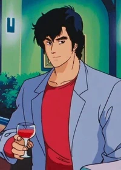
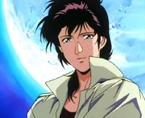
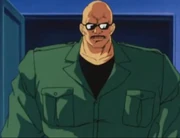
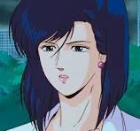

City Hunter
Nicky Larson ne craint personne… Sauf peut-être le marteau de Kaori (Laura dans la VF du Club Dorothée) ! Si ce générique vous est familier, (re)découvrez alors le génial manga de Tsukasa Hōjō à l’origine du classique de l’animation japonaise : City Hunter ! Mais y-a-t-il encore besoin de présenter l’histoire de Ryo Saeba, garde du corps et obsédé hors pair, et de Kaori, la sœur de son ancien assistant assassiné ? Mélangeant habilement comédie loufoque, scènes d’action dynamiques et plongée dans le Tōkyō des années 80, City Hunter est sans nul doute un des chefs d’œuvre de l’âge d’or du célèbre magazine Weekly Shōnen Jump. Son adaptation animée en série TV et en films, comme le récent Shinjuku Eyes, sont par ailleurs toujours disponibles sur la plateforme ADN.
Ryô Saeba
Ryô est un homme de grande taille qui est extrêmement bien bâti d'environ 1m90 (déduction basée sur les planche de Tsukasa Hojo et sur la taille de kaori, 1m70). Il porte en général un blazer de couleur bleue ou blanche (elle change entre la série animée et les films). Sous son blazer, il porte un t-shirt rouge ou bleu avec les manches retroussées et un pantalon noir foncé. Ryô peut toutefois changer son apparence si cela est nécessaire. La principale caractéristique physique de Ryô est sa chevelure, qui donne à son visage des traits élégants. Ses cheveux cachent par ailleurs une cicatrice sur le haut du front, vestige d’un accident dont il a été victime.
Ryô est un homme très réservé, qui montre très rarement ses sentiments. Il a cependant tendance à se comporter comme un autre personnage en dehors de son travail. Il apparaît alors décontracté et féru de lectures et de vidéos érotiques. Quand il a du temps libre, il apprécie séduire les « jolies filles », au grand dam de Kaori. Toutefois, s’il aime draguer les femmes, Ryô ne veut en aucun cas que de ses tentatives ne découlent une relation sérieuse. De toute manière, Kaori veille au grain et dès qu’il approche une femme de trop près, il se prend un gros coup de massue de sa partenaire.
En dépit de cette apparence de coureur de jupon, Ryô reste très professionnel dès que la situation l'exige. Il éprouve des sentiments très forts pour Kaori mais refuse de se déclarer, non seulement par peur d’un changement dans leur relation, mais surtout par crainte pour la vie de celle-ci, si ses nombreux ennemis venaient à comprendre qu’elle est ce qu’il a de plus cher. C’est la raison pour laquelle il joue les indifférents devant elle, la blessant parfois très sérieusement par ses propos. Il perd toutefois complètement ses moyens dès lors qu’elle est en danger.
Kaori Makimura
Kaori est une très jolie fille, cependant, elle a tendance à porter des tenues masculines, plus pratiques pour travailler comme partenaire de Ryô (pantalons, talons plats, veston, pas toujours de sac à main) et porte très rarement des bijoux. Elle aime néanmoins beaucoup la mode féminine et possède de nombreuses jupes et robes. Elle a des yeux clairs et des cheveux tirant sur le roux sombre et coupés courts. L'apparence de Kaori n'a rien à envier à celle des autres éléments féminins du manga, et elle possède de longues et magnifiques jambes (constat que Ryô fait à plusieurs reprises, lorsqu'il ne réalise pas qu'il est en réalité en train d'admirer sa partenaire).
Kaori est une fille sympathique, courageuse , volontaire et d'une grande générosité, qui veut à tout prix que les personnes de son entourage soient protégées. Elle n'hésite pas à venir en aide à une personne en danger, quitte à être blessée, et à s'interposer devant Ryô quand celui-ci est en plein duel car elle ne veut pas le perdre. Depuis la mort de son frère, elle le considère comme sa seule famille. Avec le temps, elle développe des sentiments profonds pour lui. Ces sentiments sont réciproques, mais ni l'un ni l'autre n'ose se déclarer.
Kaori a cependant très souvent des excès de colère contre Ryô et devient immédiatement jalouse dès lors qu'il essaie de draguer d'autres femmes ou de regarder leur lingerie. Elle est aussi très émotive et n'accepte pas, à juste titre, que Ryô fasse des commentaires peu élogieux sur son physique. Pour le punir, elle lui assène de violents coup de massue, devenus un des symboles du manga.
Umibôzu
Umibôzu est un véritable colosse. Sa taille, sa force et sa résistance suffisent à faire fuir les bandits ou à mettre en doute ses adversaires. Il a le crâne rasé. Habituellement, il porte une tenue complète de militaire kaki, mais il porte aussi une tenue de serveur lorsqu'il tient le Cat's Eye. Il porte également toujours une paire de lunettes de soleil à cause d'une vieille blessure aux yeux, faite par Ryô.
Umibôzu est un homme qui apprécie de travailler seul. Derrière son caractère d'homme fort se cache en réalité un homme très timide et sensible, ce qu'il essaye toujours de cacher, surtout quand il reçoit un compliment d'une jolie femme. S'il a relativement mis de côté son métier de nettoyeur, il effectue quelques missions pour venir en aide à Ryô, ou encore pour aider certaines personnes à retrouver leur fille ou à les rendre plus fortes. Umibôzu n'a jamais le dernier mot avec Miki, car il cède rapidement à ses demandes, ce qui s'explique par l'amour pour elle.
Umibôzu a beaucoup d'affection pour Kaori, qu'il a formée à la pose de pièges, et il la console et la rassure dès qu'il voit que celle-ci souffre de l'attitude de Ryô à son égard.
Saeko Nogami
Saeko est une jeune femme confiante et ravissante qui fait fondre les hommes et qui a parfaitement conscience de son pouvoir de séduction dont elle use pour parvenir à ses fins. Elle a des cheveux bleu foncé tombant sur la droite et des yeux bleus. Elle porte la plupart du temps une veste blanche et une robe fendue bleue, qui cache sur l'une de ses jambes son révolver ou d'autre armes comme des couteaux de lancers.
Elle est une femme intelligente, rusée, déterminée dans ses missions. Elle n'a pas peur de jouer de son charme pour réussir, ou pour demander de l'aide à Ryô, qu'elle ne paye jamais. Elle a une totale confiance en ce dernier et sait qu'il sera plus efficace que ses collègues de la police. Elle lui donne régulièrement des informations, y compris des renseignements confidentiels.
